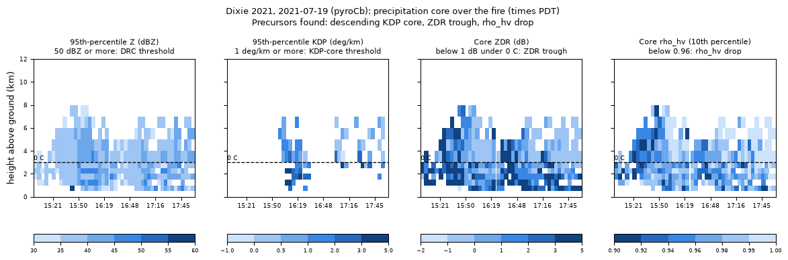

A pyroCb is a thunderstorm the fire builds. Its hazards to crews come from what happens after the plume turns convective: downdrafts and outflow that hit the ground and push fire in any direction, inflow that pulls fire toward the column, rotation, and a collapsing column. This page brings together every indicator in the study that bears on those hazards, from the fuel and weather that set the stage days ahead to the radar signatures that show them developing.
Each link needs the one before it. The forecast questions change along the chain, and so do the indicators.
Links 1–2 are the pyroCb forecast (Factors, Forecasting); links 3–5 are what this page adds. The plume can also hurt crews without becoming a pyroCb: an ash-laden column collapsing as the fire's heat drops, or the inflow drawing fire uphill toward it (Rothermel 1991).
Every pyroCb day in the study fell inside these limits. They are preconditions: most days inside them did not produce a pyroCb, but none outside them did. Percentiles are on each PSA's full-year record, the same basis as the ONCC/OSCC fire danger charts. More in the Factor guide.
The morning forecast versions are on Forecasting: a Watch when the 05 PDT HRRR puts PFT at or below about 360 GW, and a Warning when yesterday's peak fire power reaches a set fraction of it (0.13 in the Initial Attack report's pyroCb line).
Downdraft CAPE is the energy a parcel of dry mid-level air gains sinking to the ground once rain or ice evaporates into it. It runs higher on pyroCb days, but it is a weak pyroCb test: dry, deep afternoon air is common on fire days. Its value is for the next question: once a plume is convecting, how strong will its downdrafts be?
On the pyroCb and pyroCu days, the radar measured four hazard signatures over the fire, and on the days with a radar within 100 km, the precipitation core. Each was ranked against the forecast factors to see which one, known before the shift, goes with a stronger hazard.
Spearman rank correlation of each radar signature with each factor on pyroCb and pyroCu days. Blue = a stronger signature with a higher factor value; red = a stronger signature with a lower value. A box marks p < 0.05. Hover a cell for the sample size and p-value.
Low-level outflow, outflow area and the core signatures use only days with a radar within 100 km of the fire; mid-level convergence and rotation are measurable from farther out, so they use every range. For core ZDR, lower is the stronger signature, so its colours are flipped to match.
Outflow at or above Gibson & Carlin's (2025) 0.0025 s−1 divergence threshold, radar within 100 km.
The same days, split at the day's peak DCAPE. The split is the best one on 25 days; of the 3 days below 800 J/kg, 2 still reached the threshold (North Complex, 8–9 Sep 2020, during the offshore wind event, where the strong ambient wind may account for it). Treat low DCAPE as less likely, not safe.
Mid-level convergence is air flowing into the storm 3–7 km up. Gibson & Carlin (2025) found it the most consistent downburst precursor: it feeds dry air into the core, where evaporation chills it. Vrot is half the velocity difference across the strongest couplet over the fire. All three ground-relevant signatures rise with DCAPE; nothing else in the forecast set does.
A core is at least 10 precipitation gates (30 dBZ or more, ρhv ≥ 0.90) in a height bin over the fire. All six pyroCb days within 100 km of a radar had one; on the pyroCu days without one, there was nothing for a downdraft to load from. Once a pyroCb is likely, assume a core and plan for its outflow.
More pyroconvective energy and a lower free-convection height go with heavier cores: higher reflectivity and descending KDP cores, the water and ice loading that drives a downburst. They do not go with the outflow measured at the ground, which is DCAPE's: how dry the air under the core is decides how much of that load turns into a downdraft.
Gibson & Carlin's (2025) polarimetric precursors, searched in every scan for 90 minutes either side of the day's tallest plume, on days with a radar within 100 km.
The descending KDP core (heavy rain and melting ice sinking through the freezing level) is the one that separates pyroCb days. ZDR troughs and ρhv drops are nearly universal in these high-based cores and don't help (what they are and how they're calculated). Method and thresholds: Radar: firefighter hazards; why the 95th percentile: percentile choices.
Time–height pictures of the precipitation core over the fire on every day that had one. Look for the 95th-percentile reflectivity and KDP columns reaching down from above the 0 °C line (dashed) toward the ground: that is the core descending, the step before the downburst. Why the 95th percentile? → · ZDR trough and ρhv drop explained → · How to read these pictures →
Each picture compresses three hours of radar scans over the fire into four panels. Read them left to right as one story: how heavy the core is (reflectivity), how much liquid water it holds (KDP), and what the particles are (ZDR and ρhv), and in all four, whether that core is coming down.

Worked example: Dixie Fire, 19 July 2021 (pyroCb), KBBX radar. Click to enlarge.
| Element | What it is |
|---|---|
| Horizontal axis | Time (PDT), 90 minutes either side of the scan with the day's tallest fire-rooted plume. Each thin column of cells is one radar volume scan, about 4–5 minutes apart (46 scans on the example day, 14:59–17:56). |
| Vertical axis | Height above the ground at the fire, in Gibson & Carlin's (2025) bins: 0.5 km deep up to 3 km, 1 km deep to 8 km, 2 km deep above. Taller cells higher up reflect the coarser bins, not deeper echo. |
| A coloured cell | One number summarising every precipitation gate in that height bin, within 15 km of the fire, in that scan: Z ≥ 30 dBZ, ρhv ≥ 0.90, ZDR −2 to 8 dB. Plume debris is screened out first. |
| A blank cell | Fewer than 10 precipitation gates there. It does not mean no echo: smoke and debris, light precipitation and clear air all leave the cell blank. |
| Dashed line, "0 C" | The HRRR freezing level above the fire, the day's median (3.0 km on the example day). Above it, precipitation is ice; below it, ice melts. Most of the precursors are about what crosses this line. |
| Colour bars | Stepped, not continuous: each shade is a band. In three panels darker = more of the quantity. In the ρhv panel the scale is reversed, so darker = lower ρhv: darker always means "more signal". |
| Title line | The precursors the automatic search flagged that day. Treat it as a pointer to look, not a verdict: the flags are looser than a forecaster's eye (see each panel below). |
What it shows: how intense the core is in each layer: the value only the top 5% of precipitation gates exceed (why the 95th). Reflectivity grows with the size and number of particles, so hail, graupel and big raindrops light it up.
Look for: a column of dark cells (45 dBZ and up) building aloft, then the darkest cells stepping down through the 0 °C line toward the ground over successive scans. That is a descending reflectivity core (DRC): the load of water and ice falling out, dragging air down with it. The automatic flag needs 50 dBZ or more, and the highest such bin dropping at least one bin between consecutive scans.
In the example: the core reaches about 8 km near 15:40–15:50 and holds 40–50 dBZ below the freezing level from about 15:30 to 16:20. Its strongest cell (57 dBZ) is in the lowest bin at 15:40. It never builds a 50 dBZ core aloft that then descends, so no DRC is flagged. California pyroCb cores are usually too light for the 50 dBZ test (only 5 study days reached it). Panel 2 is the better guide here.
What it shows: specific differential phase, the rate (°/km) at which the horizontal pulse falls behind the vertical one passing through the echo. Flattened raindrops and wet, melting ice slow the horizontal pulse, so KDP rises with the liquid water content. Dry ice, small drops and debris barely register, and unlike reflectivity it isn't fooled by a few large hailstones. A high KDP means a heavy rain-and-meltwater load: the fuel for a downdraft.
Look for: dark cells (1 °/km and up) that first appear near or just above the freezing level and then reach lower bins in the following scans: the descending KDP core. Gibson & Carlin found it in 85% of the U.S. downbursts they studied, and it was this study's best precursor: on 4 of 6 pyroCb days against 1 of 10 pyroCu days with a core.
In the example: the clearest descent in the study. KDP passes 1 °/km at 5–6 km at 15:56, at 4–5 km at 16:00, then from 1 km up to 5 km at 16:04, and down to 0.5 km by 16:08. That is about 12 minutes from first sign aloft to the lowest bin. A second, weaker pulse follows near 16:15–16:19, and short bursts at 2.5–4 km follow after 17:00.
Caution: KDP here is a 4 km fit to the differential phase, so isolated very dark cells (8–10 °/km; 10 is the cap) can be noise from a phase jump. Trust a pattern that persists over several scans and stacked bins more than a single cell.
What it shows: the typical shape of the particles in the core, which is the gates at or above that bin's 95Z. Big raindrops are flattened and give positive ZDR (+1 to +4 dB, darker). Hail and graupel tumble and are near-spherical, and dry ice returns weakly, so they give values near 0 dB (lighter).
The normal profile: light above the 0 °C line (ice) and darker below it (melted to rain). Look for the ZDR trough: light cells (below 1 dB) persisting under the dashed line, where the core should already be rain. That is ice falling fast enough to cross the freezing level before it melts, which is what a strong downdraft does (full explanation).
In the example: the profile is mostly normal. The median core ZDR is about 0 dB at 3–7 km and rises to about 2–3 dB in the lowest kilometre. Light cells do sit just below the line at 2–3 km around 15:40–16:20 (medians about 1.2 dB), and that is enough to trip the automatic flag. Scattered very dark cells (5–7 dB) above the freezing level aren't ice. They are most likely ash or debris that passed the precipitation screen, and with only a handful of core gates per bin (bins here held about 15–45 precipitation gates, so the core is 1–3 gates), single cells are noisy.
What it shows: how uniform the core's particles are. Pure rain or pure snow gives values near 1 (light). A mix of shapes, sizes and phases, especially melting hail, lowers it (darker). The 10th percentile looks at the low tail, where that signature lives.
Look for: dark cells (below 0.96) in the same place as the ZDR trough, just under the freezing level. Together they mean melting ice coming down: the ρhv drop. Dark cells far above the freezing level mean something else, usually debris mixed into the cloud. Gates below 0.90 were removed as possible debris, so this panel can only range from 0.90 to 1.
In the example: the darkest cells are at 3–6 km near 15:40–16:00, above the freezing level, where they most likely mark plume debris mixed into the rising column rather than melting hail. Dark cells under the line around 15:45–16:20 coincide with the light ZDR cells there and the KDP descent, which is the collocated signature.
Limits of these pictures. They summarise a 15 km circle around the fire, not a tracked storm, so a cell drifting out of the circle disappears and one drifting in appears. Far from the radar the lowest bins may be empty because the beam is above them. The pictures show conditions over the fire, not at a particular crew's location. They are research hindsight from archived data; live NEXRAD shows the same fields as height slices, not in this format.
Every sounding on the Soundings page now carries the DCAPE downdraft path: a parcel from the driest (lowest θe) air in the lowest 400 hPa, carried down moist-adiabatically to the ground. The area between it and the warmer environment is DCAPE. A deep, dry, well-mixed layer under a high cloud base, the usual fire-day sounding, gives large values.
DCAPE assumes the downdraft stays saturated all the way down. A dry, high-based pyroCb may evaporate its rain too early or too little, so read it as the upper end of what the air allows.
Thresholds from this study's 23 California fires; most are a best cut on a small sample, not a validated warning criterion. Use them to raise awareness and to watch the radar, not as a go/no-go.